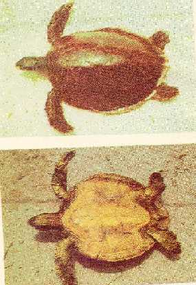

|
Digitized
Inventory of Animal Resources: Reptilia |
Erytmochelys imbricata ( Linnaeus 1757 )
Taxonomic
Details
----- Scientific Name
----- Classification
----- Synonyms
----- Common Names
Other
Biological Details
----- Habit and
Habitat
----- Distribution
---------- Extend of
Occurrence
---------- Area of
occurrence
---------- Altitude
---------- Population
-----
Conservation Status
-----
Diagnostic
Features
-----
Breeding system
Miscellaneous
Information
Literature
Scientific Name : Erytmochelys
imbricata
( Linnaeus 1757 )
Family :
Classification:
Genus
:
Erytmochelys Fitzinger 1843
Synonyms:
1766. Testudo imbricata
Linnaeus, Systema Naturae., Ed. 12, Vol. 1 : 350
Common Names:
Hawksbill
Sea turtle or Tortoise shell turtle
Mainly a non migratory species, however covers short distances for feeding. Frequents shallow coastal water with rocky embankments and coral reefs, also visits shallow vegetated lagoons and bays. Males never leave water, females frequents sandy beaches for nesting during night. Breeding season extends from August – February, with peak in October or January, correlated with north west monsoon. Adults omnivorous, feeding on any invertebrates or vertebrates, fruits of mangrove vegetation, sea weeds etc.
Circumtropical species, tropical and subtropical beaches of Pacific, Atlantic and Indian Ocean. Also in Mediterranean seas but do not breed there. Throughout Indian coast including Gulf of Katchchh, Gulf of Mannar, Andaman & Nicobar and Laksadweep Islands.
Extent of Occurrence
Circumtropical
species, tropical and subtropical beaches of Pacific, Atlantic and Indian Ocean.
Also in Mediterranean seas but do not breed there.
Area of occurrence:
Throughout Indian coast including Gulf of Katchchh, Gulf of Mannar, Andaman & Nicobar and Laksadweep Islands.
Altitude:
Not applicable
Population:
Since, it is a circum tropical species, global number is not available
Conservation status:
Included in
Appendix – I of CITES,
however, several countries such as France, Japan are not governed by the
convention laid down by CITES. Schedule – I under WLP, 1972.
Size : Medium sized and most colourful sea turtle, reaches 60-65 cm in length, fully grown adults weighs 60 – 120 kg. Largest recorded 140 kg. Large fully grown adult may attain a meter in length
Body : Head narrow, distinct scales over it, snout tapers to a point, powerful ridged jaws ( looks like a Hawksbill ) to break open mollusks, crabs, and other hard animals; premaxilla deeply excavated and not toothed terminally. Jaws are strongly hooked, head covered with symmetrical shields and with two pairs of prefrontal shields.
Flippers/Limbs : Flippers long and provided with two claws on each.
Tail : Tail short compare to body.
Carapace : Narrow and strongly serrated behind, horny plates with dark motling in the juveniles, general outline is cordate, scutes on the shell are thicker and overlapping in he young but with the increasing of age the edges come to lie side by side. Dorsal scutes horny, strongly imbricated, costal scutes – 4, Neural or Central scutes – 5, Marginal shields 25 including the narrow pre central and post central,
Colouration : Juveniles are brown above blackish below, carapace amber coloured or greenish with violet markings or dark brown to black with yellow motlings or blotches, radiating brown or black streaks on scutes. Plastron yellow or creamish, shields of head and limbs are dark brown with yellow borders.
Breeding system:
Nesting usually during night/early morning during May – January, Clutch of 96 – 182 eggs laid in 12 – 20 cm deep sand pits. 2 – 4 clutches in one season. Renesting interval is 15 – 19 days. Incubation – 58 – 64 days, Remigration takes place after 2 – 4 years.
Threat :
Loss of nesting habitat due to urbanization of coastal areas. Depleted due to the extraction of horny shields or keratin layer of the shell. Keratin is used in the manufacture of fashionable toilet articles and furniture. South east Asian countries is the largest exporter. Generally not consumed as the flesh is not palatable and contain toxic substances ingested by them.
